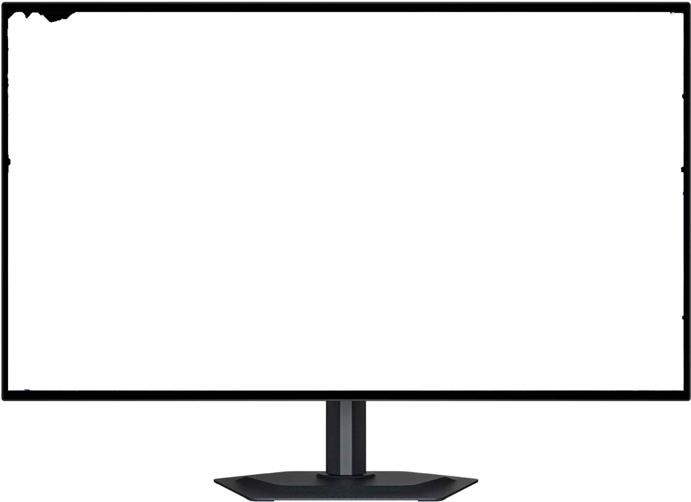

NexOS Pro 26.07
WE GAVE YOUR COMPUTER WINGS TO FLY.
NexOS Pro is the culmination of 15 years of optimizations of gaming in Linux. We have taken the raw-speed of our open-source core and supercharged it with elite automation, architectural breakthroughs and creator-grade pipelines. It is the ultimate software environment for those who refuse to settle.
Buy NexOS ProFor fifteen years
we have asked ourselves
What is the best way to play a PC game?
No limit, no bottlenecks.
Just pure kinetic speed.
Aerodynamic Layout Engine.
Experience complete interface freedom. NexOS Pro unlocks premium, one-click desktop configurations that instantly morph your workspace. Effortlessly swap between a polished macOS style, a hyper-efficient modern coding environment, a minimalist handheld layout, and classic Windows environments.


Optimization to the Max.
Squeeze hidden performance out of your high-end components with automated, low-level OS intelligence.
CREATORS, THIS ONE'S FOR YOU.
Stop letting resource-heavy recording software drop your competitive frame rate. NexOS Pro comes pre-configured with a low-latency Pro Audio Pipeline (PipeWire) and a custom-tuned fork of OBS Studio. Stream, split multi-channel audio tracks, and capture raw gameplay using up to 40% fewer hardware resources than a traditional Windows environment.


PRE-LOADED.
PRE-TUNED.
READY TO GO.
NexOS Pro arrives with a curated suite of elite open-source creative power tools (including custom profiles for Blender, DaVinci Resolve and Krita) completely pre-installed and optimized for day one.